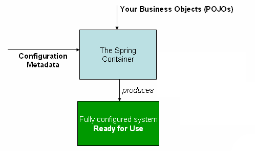

Spring源码学习笔记汇总

上图是引自Spring官网，相信有很多Java开发的朋友，很想探究下Spring原理。最近学习了Spring源码一段时间，学习过程中主要通过时序图，类图来记录Spring的主要运行原理和架构，遇到精彩的代码片段也同时截图记录。下面按Spring生命周期，通过一个主题一篇博客的形式来总结，希望能够对大家学习Spring源码有帮助。
目录
容器启动
Spring AOP详解
访问数据
Spring MVC详解
参考
推荐
备注
- UML图通过IDEA中插件PlantUML手工制作，现已提交GitHub：learn-spring-code。
- 每个UML时序图尽量控制在5~7个范围内，尽量控制在认知范围内。